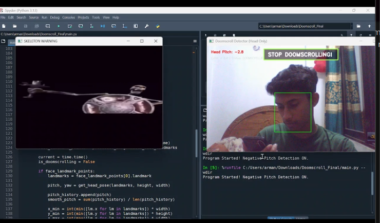

Anti-Doomscroll Detector Using Python

Fig 1: Project Screenshot
Project Demo
Project Overview
A Python-based Computer Vision script that tracks your head posture to prevent doomscrollingstrong>. If you tilt your head down to look at your phone for too long, a Skyrim skeletonstrong> pops up on the screen to warn you!
Features
- Head Pose Estimation: Uses MediaPipe Face Mesh to calculate the head's pitch and yaw.
- Smart Detection: Triggers the warning only when a specific negative pitch (head tilted down) is detected.
- Audio-Visual Warning: Plays a customized video and audio alert using OpenCV and Pygame.
- Optimized UI: Displays live tracking stats on a clean, unobtrusive window.
Tech Stack
- Python
- OpenCV (cv2)
- MediaPipe
- Pygame
- NumPy
Inspiration & Credits
This project was highly inspired by the original idea and concept from GitHub ID. You can check out their original repository here: GitHub Repository.
I took inspiration from their concept and rebuilt the logic to focus heavily on **Head Pitch (Tilt) Detection** rather than just eye tracking, making the detection much more stable for my use case.